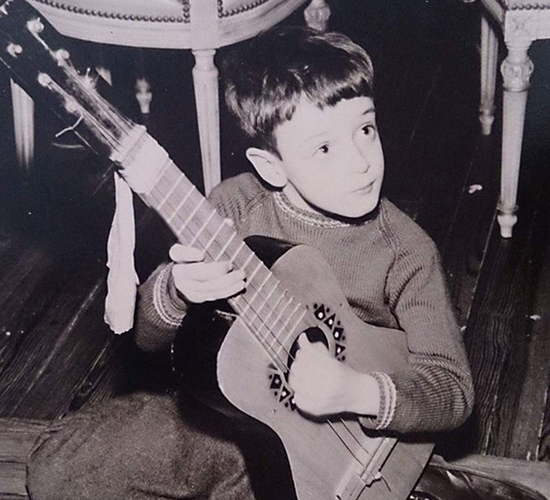
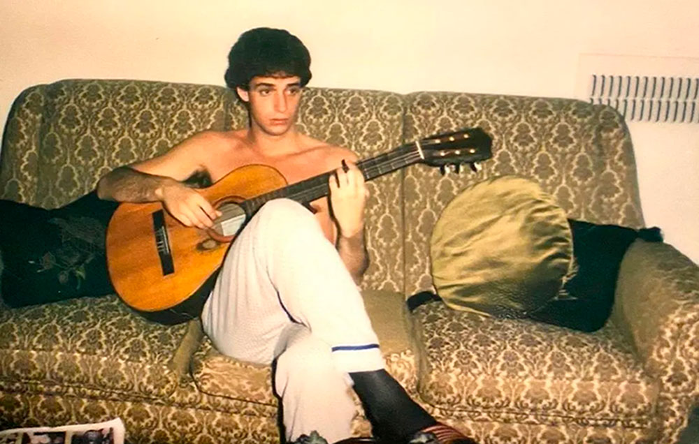
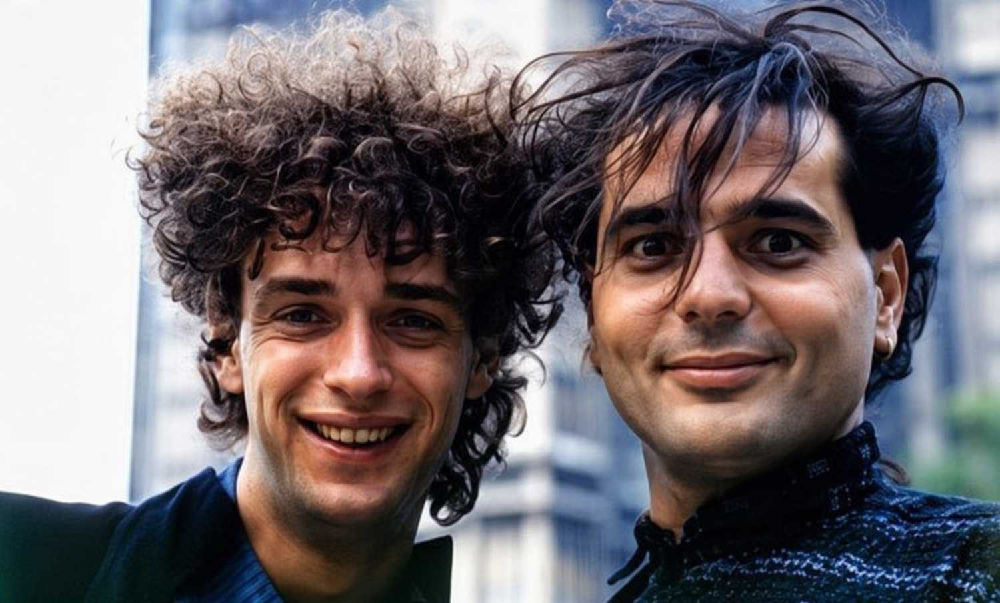
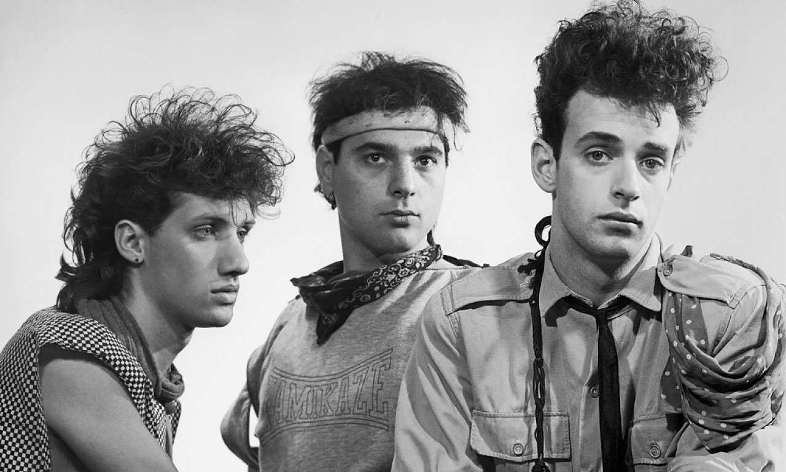

Gustavo Cerati nació el 11 de agosto de 1959 en Capital Federal, Buenos Aires, Argentina.

Su pasión por la música se notó desde su infancia, a los nueve años estudiaba guitarra, a los doce conformó un trío con el cual se presentaba en fiestas particulares, participaba de todos los eventos que se realizaban en el colegio religioso al que concurría, y llegó a dirigir el coro de la iglesia.
Sus primeras influencias musicales fueron grupos como King Crimson y especialmente The Beatles. También David Bowie, Pink Floyd y guitarristas como Jimmy Page (Led Zappelin) y Ritchie Blackmore (Deep Purple).


En el año 1979 en la Universidad de El Salvador cursando la carrera de Publicidad, Gustavo Cerati conoce a Héctor "Zeta" Bosio (futuro bajista del grupo Soda Stereo), junto a otro grupo de estudiantes con los cuales intercambiaban discos de The Police, XTC, Elvis Costello. Mientras estudiaba tocó en dos bandas: una de rock and roll y blues, y otra de fusión.
A partir del año 1982 los dos músicos comienzan a proyectar la formación de una banda en la que tocarian temas propios. En ese momento conocen a Charly Alberti, y de ahí en más, luego de un período donde prueban distintas formaciones (incluyendo por momentos a músicos como Richard Coleman, Daniel Melero y Andrés Calamaro entre otros) y distintos nombres, se constituye formalmente...
